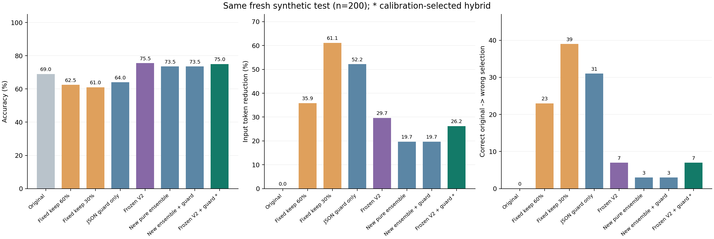
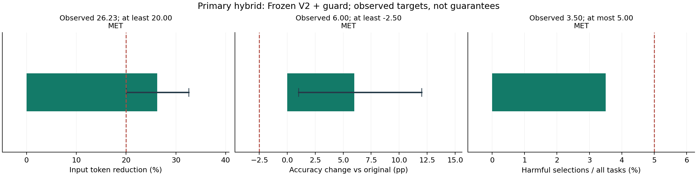
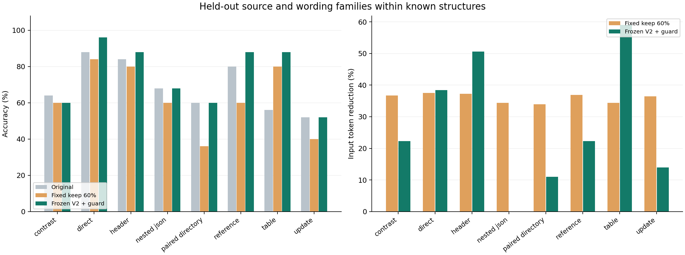

CacheScope V3 实验结果
最终主方案是“冻结V2 MLP＋JSON检查（新校准）”，由新校准集选出，并在这 200 个新测试任务、40 个来源／措辞模板组上评估。它是神经风险分数与显式JSON结构检查组成的混合方案，不能称为纯MLP。
本批观测达到三项预定目标：准确率 75.00%，完整输入token节省 26.23%；7/200 题由原本正确变为答错（3.50%）。达到经验目标不代表未来数据的风险保证。
新训练、校准和主方案的归属
旧V1/V2的 960 条任务记录现在全部是开发数据，其中旧的50条长度派生记录仍共享来源；原有测试不再为V3提供独立验证。内部按组划分选择训练轮数后，在旧开发数据上重训权重；新的 160 题只负责阈值和主方案选择；最后 200 题不参与拟合或选择。
本次校准选中了冻结V2权重加新门槛和JSON结构检查的方案。新训练的54维MLP集成虽已完成训练，但没有入选主方案；因此主结果的改善不能归因于新训练权重。新训方案和三个单种子的真实结果仍完整保留，不能用较好测试种子替代主方案。
校准预先按有害接受上限 1.25%, 1.88%, 2.50% 从严到宽检查，首先选择存在至少20%输入token节省的档，再在该档比较预定混合候选；本次冻结采用的经验上限为 1.25%。同时要求校准准确率相对原文下降不超过1.25个百分点。最终测试的三项目标保持20%节省、准确率下降不超过2.5个百分点、有害接受不超过5%。
结构检查只拒绝“原文是合法JSON容器、压缩后无法解析为JSON容器”的候选；其余风险由学习到的分数决定。它不是语义验证器。所有特征与结构判断只使用原文、问题、候选文本和token数，不读取参考答案、实际回答或正确性。
同一新测试集上的全部 16 项策略
每项策略按任务计一次准确率，原文答错的题仍在分母内。“原文正确→答错”和“原文错误→答对”分别报告，不能仅用两者相抵后的净准确率隐藏压缩退化。不同策略的压缩程度与校准门槛不同，不能把不同token预算下的准确率差解释为预算完全相同时的因果优势。

同一新测试集上的已冻结策略；星号表示校准选定的混合主方案
三项目标与不确定性
主方案相对原文准确率差为 +6.00个百分点，按模板组配对bootstrap得到的95%区间为 [+1.00, +12.00] 个百分点；输入token节省区间为 [20.01%, 32.57%]。点估计达标不代表已经证明统计上的非劣性，也不意味着在未来任务中保证同样的风险上限。

预定目标与实测值；准确率差和token节省的黑线为模板组bootstrap区间
McNemar值是逐任务精确二项检验，未校正模板内相关性；模板组bootstrap也受有限组数影响。比较没有多重检验校正，不能据单一p值宣称普遍优越。极小p值按“<0.0001”展示，完整精确值保留在指标JSON。
纯神经、结构规则与混合策略的区别
新训纯MLP集成（3分数取最大值）：准确率 73.50%、token节省 19.67%、有害接受 3 次；新训MLP集成＋JSON检查：对应为 73.50%、19.67%、3 次。这些策略各自采用已冻结的校准门槛；差异反映整个策略，不能全部归因于加了一个检查。
冻结V2 MLP（原门槛）：准确率 75.50%、token节省 29.67%、有害接受 7 次；冻结V2 MLP＋JSON检查（新校准）：对应为 75.00%、26.23%、7 次。这些策略各自采用已冻结的校准门槛；差异反映整个策略，不能全部归因于加了一个检查。
仅JSON结构检查的准确率为 64.00%、token节省为 52.19%、有害接受 31 次。这个对照用于区分显式规则与神经风险门控，不能只展示混合方案而声称全部收益都来自深度学习。
三个预定纯MLP种子的测试准确率均值为 74.00%，样本标准差为 0.87 个百分点。三个种子均在完整表中，主方案身份由校准记录决定；最大值集成也不是测试后挑选最好种子。
风险分类的退化标签定义在原文答对的候选上；分数是未校准的条件风险排序，不是任意请求的绝对错误概率。混合分数含结构拒绝编码，相关AP/AUC也不能当成纯神经模型指标。
长度与结构分项

已见高层结构中的新来源与留出措辞家族；不据分项结果重新调门槛
这些都是合成英文姓名、日期、预算事实。八类高层结构在开发数据中已见，测试留出新的来源与措辞／布局家族，不能称为完全新结构的分布外验证。400-token分层只表示本数据内的相对长度，不等于真实长文档基准。单一小型回答模型上的观测也不能推广为其他模型、语言或真实文档的保证。
核验、案例与复现
核验文件的整体状态：通过。
完整核验JSON
全部真实指标JSON
测试前冻结的主方案、门槛与哈希
完整策略CSV
逐任务已冻结策略决策
数据卡与范围
54维特征与结构守门说明
真实失败与改善案例
数据生成、代码与文档使用了AI辅助。标签来自实际本地模型回答与预定事实的匹配。token节省使用完整输入提示词计数，不能直接解释为API费用、订阅额度或端到端延迟节省。训练、校准和测试的原始观测均应保留，未达目标的结果也不应隐藏。
冻结V2纯模型在本批测试也达标：75.50%准确率、29.67%节省、7次退化，不能据本批结果声称JSON检查带来净收益。三个预定重训单种子MLP也全部达标，仍保留其对照身份。
达标核对与解释 · 额外手工预测例的边界